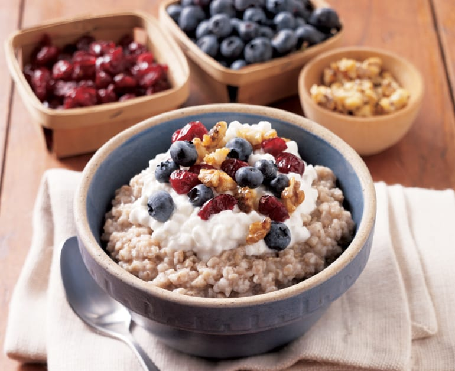

Sweet cottage cheese with pasta/oatmeal

Delicous meal for any time of day, be it morning breakfast or goodnight-sleep, anti-fast meal
Cottage cheese with a little bit of fat free greek yoghurt, fruits and the filling of choice
--------------------------------------------------------------------------------------------------------------------------------------------------------------------------------------------
Ingredient List
- 150 grams of cottage cheese
- Small fruits of choice
- 50 grams of fat greek free yogurt for consistency
- 10 grams of protein powder
- 30-50 grams of wholebread pasta or oatmeal
- Tea spoon of cinammon
--------------------------------------------------------------------------------------------------------------------------------------------------------------------------------------------
Steps
- Combine cottage cheese, greek yogurt, protein powder and cinnamon
- Add in the filling of choice
- Put the fruits on top of the porridge
Back to Homepage